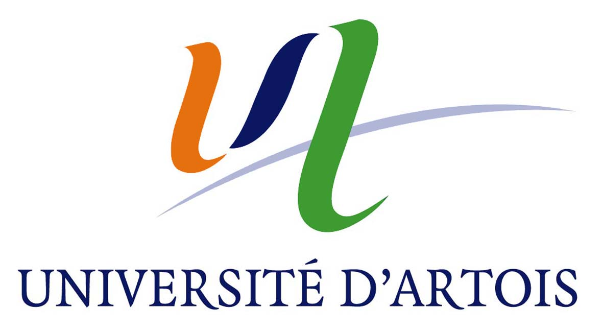
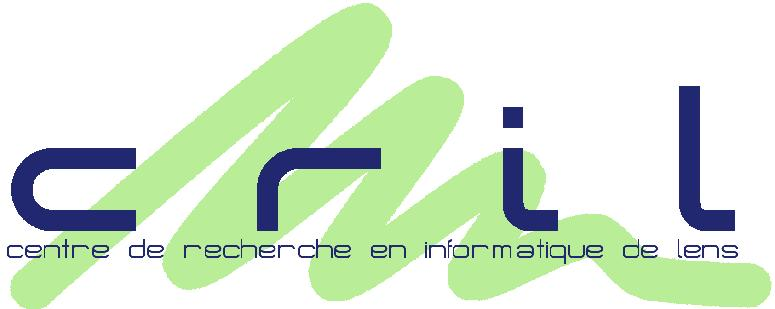
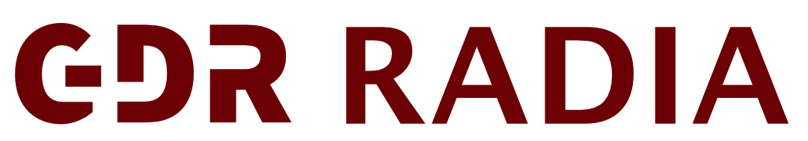

L’objectif principal de cette école est de fournir une vision transversale et actualisée des différentes approches en IA, en mettant en lumière leurs apports concrets aux sciences expérimentales, formelles et humaines. Dans un contexte de spécialisation croissante, elle vise à offrir aux chercheur.ses, en particulier en début de carrière, l’occasion de prendre du recul sur leur discipline, de découvrir des techniques complémentaires à leur champ d’expertise, et de mieux comprendre les conditions d’intégration de l’IA dans des contextes scientifiques variés.
L’école mettra en évidence la complémentarité des approches symboliques et numériques, ainsi que le rôle structurant des modèles hybrides dans les usages scientifiques. Elle ambitionne également de présenter des avancées méthodologiques récentes, tant en termes d’apprentissage que de raisonnement ou modélisation des connaissances, en les ancrant dans des domaines d’application concrets (biologie, médecine, environnement, etc.). Enfin, elle abordera les enjeux épistémologiques et éthiques liés à l’usage croissant de l’IA dans les sciences, en particulier les questions de transparence, de robustesse, de reproductibilité et de responsabilité.
Loin de se limiter à une présentation technique, l’école vise à articuler les enjeux méthodologiques et scientifiques avec les besoins réels des communautés disciplinaires concernées, dans une logique de fertilisation croisée et de réflexion critique sur les transformations en cours.
L’édition 2026 s’inscrit dans cette dynamique en élargissant l’ouverture à d’autres communautés scientifiques et a pour objectif de créer des passerelles durables entre la communauté de l’IA et d’autres disciplines scientifiques fortement concernées par l’essor des méthodes d’IA, consolidant ainsi une approche véritablement interdisciplinaire.
Prioritairement :
Secondairement :
Prérequis : Aucun prérequis n'est nécessaire pour suivre l'enseignement de cette école. Une mise à niveau incluant un panorama général sur les techniques d'IA est prévue en début de semaine.
Inscription : L’école aura lieu au Touquet-Paris-Plage, du lundi 19 au vendredi 23 octobre 2026. Tarifs jusqu’au 2 octobre 2026 : 150 € pour les étudiants et doctorants, 250 € pour les académiques et 350 € pour les industriels. L’inscription est gratuite pour les agents CNRS. Les frais d’inscription incluent les pauses-café, les repas et les événements sociaux, mais pas l’hébergement.
Nous disposons d'un ensemble de chambres au Riva Bella, au tarif de 39 € par personne et par nuit en chambre double, ou de 79 € par nuit en chambre individuelle. Le petit-déjeuner est proposé au tarif de 9,50 € par personne. Si cette offre vous intéresse, veuillez nous contacter à l’adresse suivante : ia2-2026@cril.univ-artois.fr.
Bourses : Des bourses couvrant les frais d’inscription des jeunes chercheuses et jeunes chercheurs (JCJC) sont proposées par le GDR RADIA. Des bourses complémentaires pourront également couvrir l’hébergement.
Leur attribution dépendra des candidatures reçues, du profil des candidats, étudiants ou non, et de leurs besoins de financement, dans la limite du budget disponible.
Pour candidater, merci de nous contacter rapidement à ia2-2026@cril.univ-artois.fr avant le 30 septembre 2026 en indiquant :
Inscrivez-vous :
S'inscrireLieu : L’école se déroulera au Palais des Congrès du Touquet-Paris-Plage.
Gare d’arrivée : La gare la plus proche est la gare d’Étaples-Le Touquet, située à environ 5 km du Touquet-Paris-Plage. Il n’y a pas de gare au Touquet même : depuis la gare, il faut prendre une navette, un bus ou un taxi.
Navettes et bus (plus d’informations) :
L’école (19-23 octobre 2026) a lieu pendant les vacances de la Toussaint : la ligne de bus Étaples – Le Touquet et la navette « Mer et Forêt » devraient donc circuler tous les jours. Le Caddy Express, lui, ne circule pas le mardi ni le mercredi. Horaires sous réserve de modifications ; pensez à réserver votre navette à l’avance.


